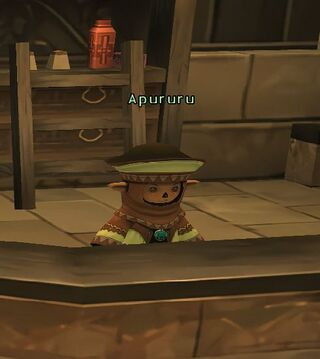
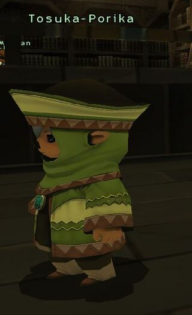
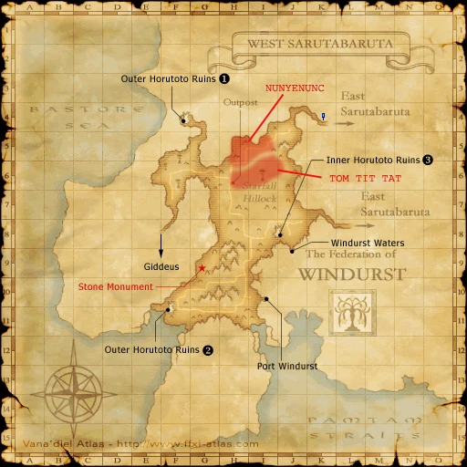

Before you begin
Be allied with Windurst, have Rank 8, and finish the preceding required story steps. Raise Rank Points if the mission is not offered.
People in this mission






Walkthrough
- Accept the mission. Meet Apururu in Windurst Woods (H-9) for the Manustery Ring.
- Collect three rings: Rukususu behind Fei’Yin map 2’s Cermet Door (F-6), Sedal-Godjal at Davoi (J-8), and Tosuka-Porika at Windurst Waters (G-8).
- Return to Apururu, then speak with Kupipi.
- Enter Amaryllis Tower in West Sarutabaruta (F-4). Pass Outer Horutoto’s cracked wall (I-6); examine the next map’s cracked wall (G-8) to summon Queen of Coins and Queen of Swords.
- Defeat both, then recheck the wall for the Orastery Ring.
- Speak with Apururu, Shantotto in Windurst Walls (K-7), then Apururu again.
- Reach the Gate of Darkness in Inner Horutoto’s Rose Tower map 2 (I-7) through the Three Mage Gate or Canal route. Examine it, then return to Apururu.
Locations and references
| Place / NPC | Location | Reference |
|---|---|---|
| Cardian trigger | Outer Horutoto Ruins, beyond Amaryllis Tower (G-8) | Location reference |
| Gate of Darkness | Inner Horutoto Ruins, Rose Tower map 2 (I-7) | Location reference |
Completion and reward
Rank 9; 80,000 gil
Area maps
Open a zone below, then select a map to enlarge it. Match the named floors and grid coordinates in the steps; these are reference area maps, not a live position tracker.
Windurst Woods


Fei'Yin


Davoi


Windurst Waters


West Sarutabaruta



Windurst Walls


Outer Horutoto Ruins


Inner Horutoto Ruins


References
HorizonXI Wiki: Windurst 8-2 · LandSandBoat mission definition
The route summary covers the original story. Other servers’ extra rewards, level-cap settings and Trust rules are not promises of Zenith behavior. Confirm battlefield entry conditions in game.
NPC map locations
| NPC | Game-map location |
|---|---|
| Apururu | Windurst Woods (H-9) |
Additional level-75 reference
|
Walkthrough
- Get the mission from the gate guard. You need at least 80% of your Rank Points bar filled to receive this mission.
- Speak with Apururu in the Manustery who will explain that her brother is locked in a Dungeon, and only you can save him, by collecting five rings to open the dungeon door. These rings are mostly from past missions - you have to go speak with the NPCs to collect them, as you no longer possess them. Collect the four rings from:
- Apururu - Manustery Ring (Manustery. Windurst Woods - received upon first conversation/cutscene)
- Tosuka-Porika - Optistery Ring (Optistery, Windurst Waters)
- Sedal-Godjal - Aurastery Ring (J-8, Davoi)
- Rukususu - Rhinostery Ring (F-6, Lower level of Fei'Yin)
- Once the four rings have been collected, speak with Apururu again, who will send you to Kupipi (in Heavens Tower), who tells you that to collect the last ring you must go to Outer Horutoto Ruins.
- A party composed of at least 14 level 65 players, 6 level 70 players, or 2-3 level 75 players is recommended for the fight.
- Go to the F-4 West Sarutabaruta tower. Once inside, go through the Cracked Wall at I-6, then to the G-8.
- Rest to full and buff up before examining the cracked wall - examining triggers the fight immediately.
- You'll be fighting two level 72 Cardian NMs: Queen of Coins (RDM) and Queen of Swords (PLD). They are immune to sleep and silence, but susceptible to bind. Once the mobs are dead, examine the Cracked Wall for a cutscene, then return to Windurst.
- If you spawn the Queen Cardians by clicking the Cracked Wall with Sneak active, they will not aggro. When pulled with a ranged attack or a magic spell, just be at good distance (20'+), they will not link (they will aggro to magic). In this manner, you only need to fight one of the two Cardian; the one that does not aggro will eventually despawn, and you may then click the Cracked Wall again to continue.
- They will use their respective 2-hour abilities. For this reason, it is not advisible to attempt to solo the Red Mage.
- Can be soloed by a Black Mage 75, using manafont, tier IV spells, Ancient Magic 2, and bind.
- Can be easily soloed by a Summoner 75 (with Fenrir), while using Spirit Taker on "Easy Prey" mobs around to recover MP. Astral Flow, food & drinks not necessary. It's easier to solo the RDM using this technique.
- Speak with Apururu for a cutscene.
- Go to Shantotto for another cutscene. She will give you the Glove of Perpetual Twilight.
- Go back to Apururu. During this cutscene with Apururu, she'll tell you to go rescue her brother from the Dungeon.
- Head now to the Horutoto tower entrance at J-7 in East Sarutabaruta. Past the Three Mage Gate, and at I-7, you will find the Gate of Darkness. Examine it for yet another cutscene.
- Return to Windurst, the Manustery, and Apururu, for a final cutscene and the completion of the mission.
- Optionally, you can now go to Shantotto in Windurst Walls for additional storyline.
Game Description
- Mission Orders
- The time for the Dark Dungeon jailbreak is at hand! At the request of the Manustery, you are to collect the ministry rings from all the five ministers.
Adapted from Eden Wiki: The Jester Who'd Be King · Contributors and history · CC BY-SA 4.0. Revision 8610. Layout, links and optional background text adapted for Zenith.